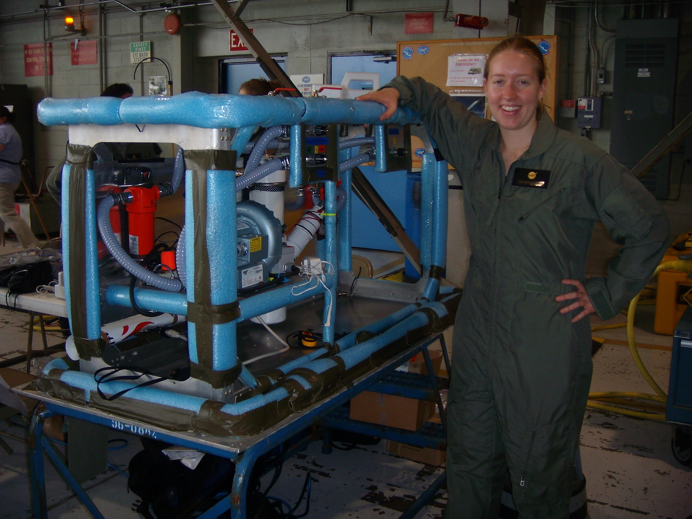
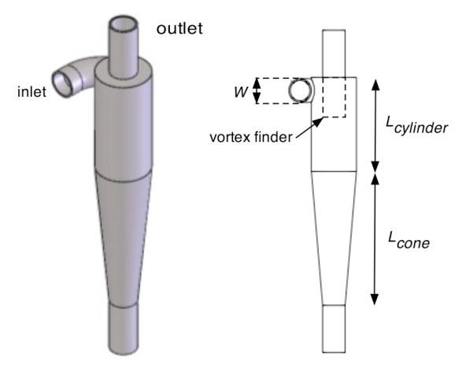
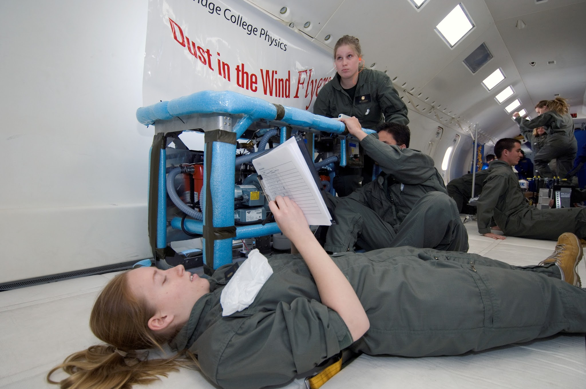
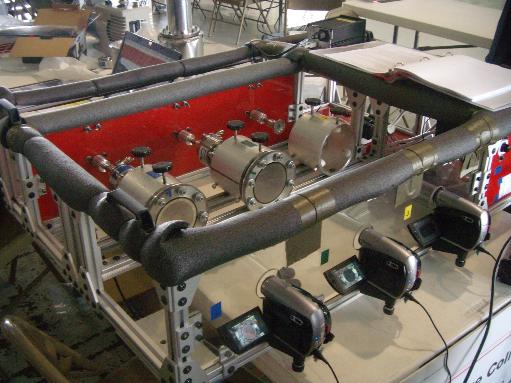
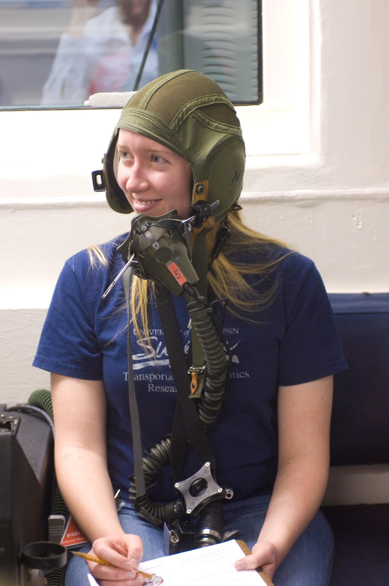
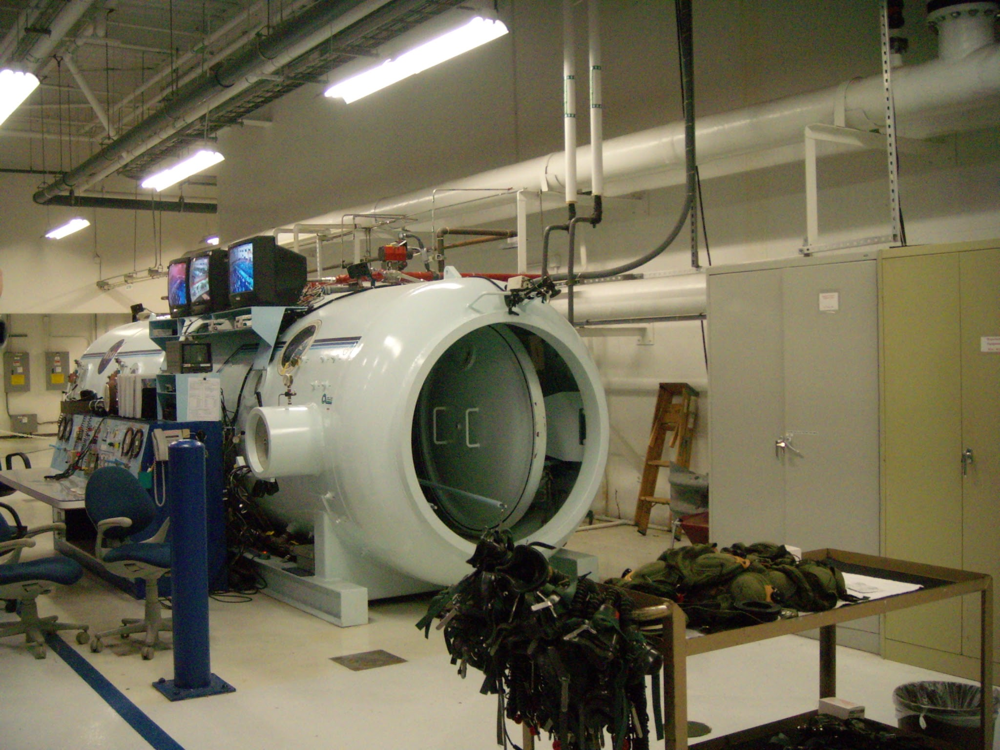

NASA Microgravity Research
How did I end up on NASA's “Vomit Comet”?
I was presenting work from my Elijah balloon payload project at the Wisconsin Space Grant Consortium conference. After the presentation, I was sitting in the audience next to my professor, Dr. Kevin Crosby, when a group presented their research aboard NASA's reduced gravity aircraft, affectionately known by many as the “Vomit Comet” or as the prefered, less visceral name, the "Weightless Wonder." I remember feeling so amazed by their experience and work, and looked at Dr. Crosby with a big grin and said, “I'm doing that!”
He agreed to advise the project, with one condition: “I'll be your advisor, but you're doing all the work!” So I recruited a team and wrote a proposal for NASA's microgravity university research program. Our first proposal was not selected, because other researchers were already working on our proposed research problem, but NASA's microgravity program reached out to connect us with Dr. Juan Agui, who had a research problem involving filtering lunar dust. That connection became the beginning of two years of experimental research aboard NASA's reduced gravity aircraft.

Project 1: Does cyclonic filtration work in lunar gravity?
When the Apollo astronauts visited the Moon, they had issues with the lunar dust. It's kinda nasty, with fine particles, like baby powder, that cling to everything. The dust (called regolith) is also very abrasive due to lack of erosive processes on the Moon. Lunar regolith causes problems with equipment and, over the long term, could also cause severe lung and other conditions. So if we want to keep a longer human presence on the Moon, we need solutions for dealing with lunar regolith on future missions. One possible solution is cyclonic filtration. A cyclone uses swirling airflow to separate dust particles from the air through inertia (think about those fancy Dyson vacuum cleaners). It can reduce the need for bulky disposable filters, but we didn't know how well it would perform in very low gravity ("microgravity").
Working with Dr. Agui, our team designed and built an experiment to test whether cyclonic filtration worked under simulated lunar gravity and how efficiently it collected particles. We flew the apparatus aboard the Vomit Comet, where the aircraft's parabolic maneuvers provide brief periods of lunar gravity for our measurements.


Project 2: What is the angle of repose in lunar gravity?
Our second project focused on a different problem: how does loose lunar material settle and pile up when gravity is only about one-sixth as strong as it is here on Earth? The angle of repose is the steepest slope that a pile of loose grains can maintain before the material begins to slide. It's useful when thinking about excavating lunar soil and building structures. We designed and built a rotating apparatus with sealed vacuum chambers containing lunar mare simulant. The chambers had windows, and cameras recorded the material as the containers turned during reduced gravity maneuvers. We used those recordings to measure the angles of repose in lunar gravity.

What does it take to fly an experiment on the “Vomit Comet”?
Much more than just showing up and getting on an airplane! I led the team, coordinated the experiment design and construction, prepared the safety manual and Test Equipment Data Package, managed the budget and expenses, and organized freight shipping and team travel. And then we actually had to get our experiments approved to fly. Before flight we did medical evaluations, equipment and safety reviews, and training that included time in a hypobaric chamber. We learned how to deal with low oxygen conditions and what to expect during parabolic flight. They even taught us what to do if we got sick in zero-g! I am forever grateful that I got to fly with our experiment and collect data... hand writing measurements from gauges on a clipboard. Being weightless, leading that project, engineering solutions, and getting to meet the many incredible people who worked at NASA (crew, astronauts, etc.) was one of the more memorable experiences of my life.


Why does this research matter?
People working and living on the Moon will have to deal with problems that we don't usually think much about here on Earth. How do we keep fine, abrasive dust out of the air? How do we keep excavated slopes stable? Our projects investigated two pieces of those problems: how well cyclone separators collect particles in lunar gravity, and how lunar soil simulant behaves when it piles up in reduced gravity. These measurements will help inform the design of future lunar systems and surface operations. I still love that all of this started with watching another group present their research at a conference and deciding, “I'm doing that!” and will be forever grateful to my mentors at Carthage, like Dr. Crosby, and at NASA, like Dr. Agui, who gave me to encouragement and space to explore.
Related publications and reports
- Crosby, K. M., J. Agui, C. Pennington, E. Sorensen, E. Martin, I. Fritz, and B. Frye, 2009: Measurements of the Collection Efficiency of an Air Cyclone in Lunar Gravity. Wisconsin Space Grant Consortium. PDF
- Crosby, K. M., J. Agui, C. Pennington, E. Sorensen, E. Martin, I. Fritz, and B. Frye, 2008: Inertial Filtration of Lunar Dust in Reduced Gravity. Joint Annual Meeting of LEAG–ICEUM–SRR. PDF
- Crosby, K. M., I. Fritz, S. Kreppel, E. Martin, C. Pennington, B. Frye, and J. Agui, 2009: Scaling Relations for Repose Angles of Lunar Mare Simulants. Lunar Exploration Analysis Group. PDF
My earlier research was published under the name C. Pennington. See my Publications page for the full citations and other work.